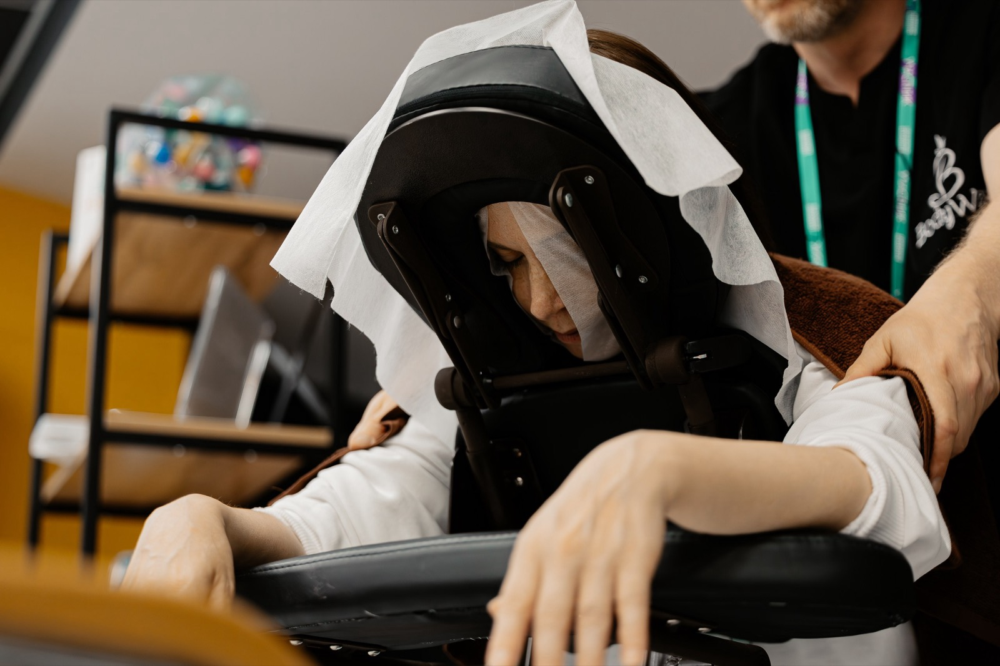

Почему сотрудники устают: дело в митохондриях
Внутри каждого из нас — тысячи микроскопических энергостанций. И если работа сидячая, они работают почти на треть слабее. Это не метафора, а цифры из свежего исследования Университета Колорадо — разбираемся, что за ними стоит и как вернуть себе энергию.

01. Что происходит внутри
Митохондрии — микроскопические энергостанции внутри каждой клетки. Их тысячи, и именно они превращают еду и кислород в АТФ — «валюту», на которой работает всё: мозг, мышцы, органы, настроение. Проще говоря: сколько у вас живых митохондрий — столько в вас жизни. Когда они просаживаются, вы это чувствуете.
Встаёте уже уставшим
Сон был, а бодрости нет — тело просыпается, но ресурса на день не хватает с самого утра.
Туман в голове после обеда
Концентрация проседает в середине дня, даже если задача совсем несложная.
К вечеру нет сил ни на что
Спорт, домашние дела, общение с близкими откладываются — остаётся только диван.
Кофе больше не работает
Привычная доза кофеина уже не даёт эффекта — организм перестаёт на него откликаться.
Если эти ощущения знакомы, не спешите списывать всё на лень или возраст. Возможно, это ваши клетки сообщают: «У нас закончилось топливо».
02. Цена бездействия
Учёные сравнили две группы здоровых мужчин — без диагнозов и с нормальными анализами. Разница только в одном: у первых есть физическая активность хотя бы 150 минут в неделю, у вторых её нет вообще. Заглянули внутрь мышечных клеток — и вот что нашли у тех, кто сидит.
Фактически это и есть цена бездействия — минус треть энергии каждый день. Без больничного, без диагноза и даже без единой жалобы на самочувствие.
03. Первое условие: снять тормоз
Митохондрии умеют восстанавливаться, но для этого нужны два условия одновременно. Первое — убрать то, что постоянно «тормозит» организм: кортизол и всё, что его поддерживает, — хронический стресс, недосып, тревожность, постоянное мышечное напряжение.
Массаж
Что делать: регулярные сеансы, даже короткие, в течение рабочей недели.
Зачем это нужно: снимает мышечное напряжение и помогает нервной системе выйти из режима тревоги.
Йога
Что делать: практика без фанатизма — растяжка, дыхание, мягкое движение.
Зачем это нужно: возвращает контакт с телом и снижает уровень стресса.
Медитация
Что делать: несколько минут осознанного дыхания в течение дня.
Зачем это нужно: выключает реакцию «бей или беги» и снижает кортизол.
Ароматерапия
Что делать: подобрать композицию ароматов под задачу — спокойствие, концентрация или сила.
Зачем это нужно: работает как быстрый переключатель состояния в течение дня.
04. Второе условие: дать сигнал расти
Второе условие — дать организму команду для роста митохондрий. Они размножаются только тогда, когда получают сигнал «нужно больше энергии, готовься». Этот сигнал даёт контролируемый стресс.
Движение
Что делать: активность в спокойной пульсовой зоне — самый изученный и доступный вариант.
Зачем это нужно: запускает рост новых митохондрий в мышечных клетках.
Температурные перепады
Что делать: контрастный душ, баня, купель.
Зачем это нужно: тренирует сосуды и даёт телу контролируемую нагрузку для адаптации.
Лёгкая гипоксия
Что делать: дыхательные практики с задержками.
Зачем это нужно: имитирует нехватку кислорода и стимулирует клетки к росту.
Интервальное голодание
Что делать: окно питания 8–10 часов в сутки.
Зачем это нужно: работает через тот же механизм клеточного обновления.
Почему работает только связка? Убрали кортизол — клетка перестала тратить силы на выживание. Дали стимул — клетка начала строить. Вот и вся синергия: никакой магии, чистая физиология.
05. От знания к действию
Качественный сон, работа со стрессом, движение, баня — всё это действительно работает. Проблема в другом: между «знать» и «делать» лежит 8-часовой рабочий день, дорога, домашние дела — и вечером приоритет между залом и подушкой мы чаще отдаём последней. Это не лень, а нехватка ресурса — а взять его неоткуда, если у самой клетки его нет. Разорвать круг можно там, где человек и так проводит полжизни, — на работе. Не после неё, если останутся силы, а прямо посреди дня, без переодеваний и подвигов. Именно это мы и привносим в BodyWay.
Массаж
Что делать: 20 минут между задачами.
Зачем это нужно: плечи отстают от ушей, а тело выходит из режима напряжения.
Ароматерапия
Что делать: индивидуальный безопасный «эликсир» — спокойствие, концентрация или сила, доступные в любой момент.
Зачем это нужно: быстро меняет состояние без долгой подготовки.
Йога
Что делать: без фанатизма — просто вернуть ощущения в тело и вспомнить, как дышать.
Зачем это нужно: снимает напряжение, накопленное за день.
Психолог
Что делать: разобрать тревогу до того, как она станет заявлением на стол.
Зачем это нужно: снижает уровень стресса и риск выгорания.
Нутрициолог
Что делать: разобраться, почему обед вырубает в сон, а кофе перестал работать.
Зачем это нужно: энергия возвращается через питание, а не только через кофеин.
Это не марафон и не «новая жизнь с понедельника», а полноценная жизнь каждый день — энергия возвращается там же, где была потрачена.
Хотите узнать, во сколько ежедневная усталость обходится вашей компании?
Посчитаем вместе на калькуляторе: сколько бизнес теряет из-за выгорания, больничных и низкой продуктивности — и сколько стоит забота о команде на самом деле. Цифра обычно отрезвляет: заботиться выходит дешевле, чем «мотивировать» работать на износ.